Conhecendo o MaréPost
O MaréPost é onde você escreve, agenda e publica nas suas redes sociais, tudo num lugar só. Ele roda no seu próprio computador: seus textos, imagens e contas ficam com você.
O menu da esquerda
Tudo começa pelo menu lateral. De cima para baixo:
Nova publicação
O botão azul no topo. Abre o editor para escrever um post.
Publicações
O que está agendado, o que já saiu, o que falhou e os rascunhos.
Caixa de entrada
Comentários, mensagens e avaliações das suas redes.
Análises
Visualizações, engajamento e seguidores de cada conta.
Ideias
A IA sugere posts a partir de um assunto.
Estúdio
Editores de imagem e de vídeo, corte rápido e gravador de tela.
Mídia
A biblioteca com todas as suas imagens, vídeos e logos.
Automações
Fluxos que trabalham sozinhos, como republicar posts.
No rodapé do menu ficam Contas (as redes conectadas), Configurações e o seu perfil. Clicando no seu perfil, abre um menu com preferências, ajuda, este Manual de uso e Sair.
Entrar e criar a conta
O acesso é pelo navegador, no endereço do seu MaréPost (no computador onde ele está instalado, http://localhost:8080; de fora, o endereço público que você configurou).
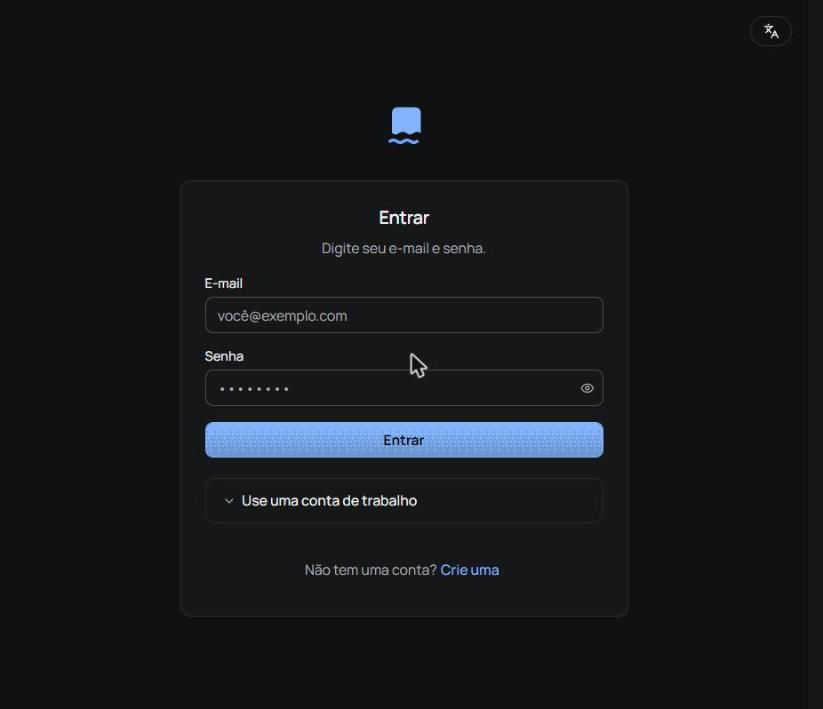
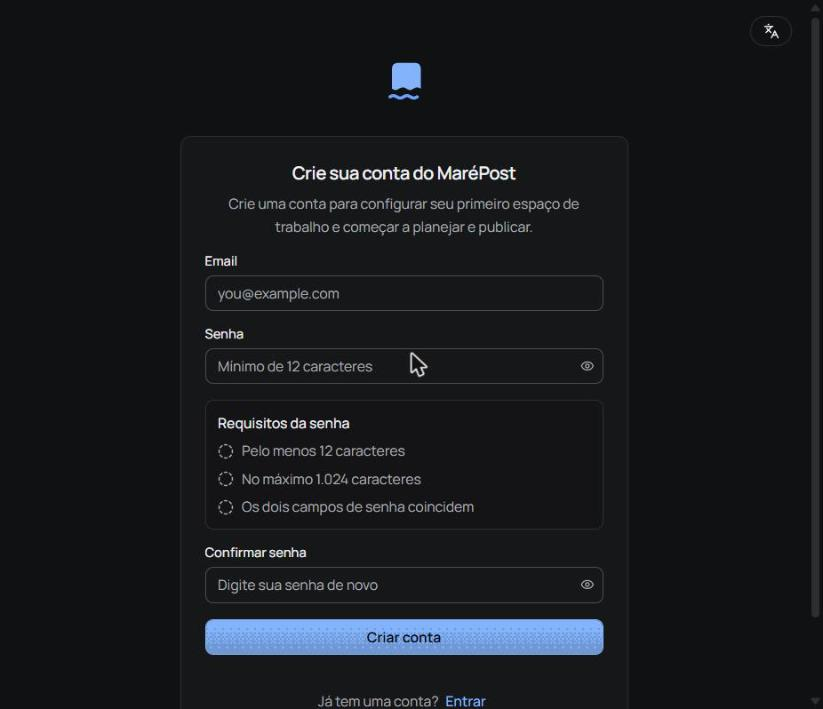
Criar a conta (só na primeira vez)
- Abra o endereço do MaréPost e clique em Criar conta.
- Preencha nome, e-mail e uma senha forte.
- Pronto: a primeira conta criada é a do administrador da instalação.
Entrar no dia a dia
- Abra o endereço do MaréPost.
- Digite o e-mail e a senha e clique em Entrar.
O primeiro dia
Cinco ajustes rápidos que deixam tudo pronto para usar. Faça nesta ordem.
- Acerte o fuso horário. Em Configurações › Geral, troque Fuso horário de UTC para o seu (por exemplo, America/Sao_Paulo ou America/Bahia) e clique em Salvar alterações. Sem isso, um post marcado para as 9h sai às 6h.
- Dê nome ao espaço de trabalho. Na mesma tela, troque o nome e, se quiser, a imagem e a cor.
- Conecte as suas redes. Em Contas, veja o capítulo Conectar as redes.
- Defina os horários da semana. Em Configurações › Agenda de publicações, veja Horários fixos da semana.
- Escolha o tema. No seu perfil (rodapé do menu), escolha claro, escuro ou igual ao do sistema.
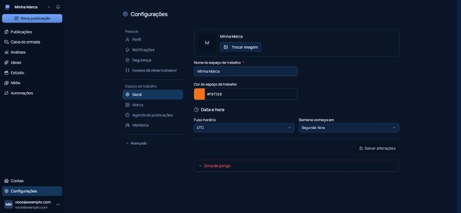
Conectar as redes
Antes de publicar, o MaréPost precisa da sua autorização em cada rede. Isso é feito uma vez por conta.
Contas
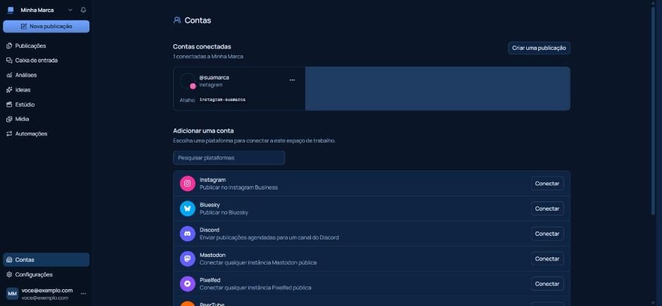
- Clique em Contas no rodapé do menu.
- Em Adicionar uma conta, procure a rede (Instagram, LinkedIn, Bluesky, Mastodon, Telegram, Discord e outras) e clique em Conectar.
- A rede abre a própria tela de login. Entre com a conta que vai receber os posts e aceite as permissões.
- Você volta para o MaréPost e a conta aparece em Contas conectadas.
- A conta precisa ser profissional (Criador de conteúdo ou Comercial) e estar ligada a uma Página do Facebook.
- Clique em Conectar no Instagram e escolha Continuar com o Facebook. Entre com o Facebook que administra a Página, marque a Página e a conta do Instagram e confirme.
- O Instagram só aceita posts com imagem ou vídeo. Post só de texto não sai.
- Os posts saem no seu perfil pessoal. Clique em Conectar, entre no LinkedIn e autorize.
Escrever uma publicação
Você escreve uma vez e o MaréPost entrega em todas as contas escolhidas, cada uma no formato da sua rede.
Nova publicação
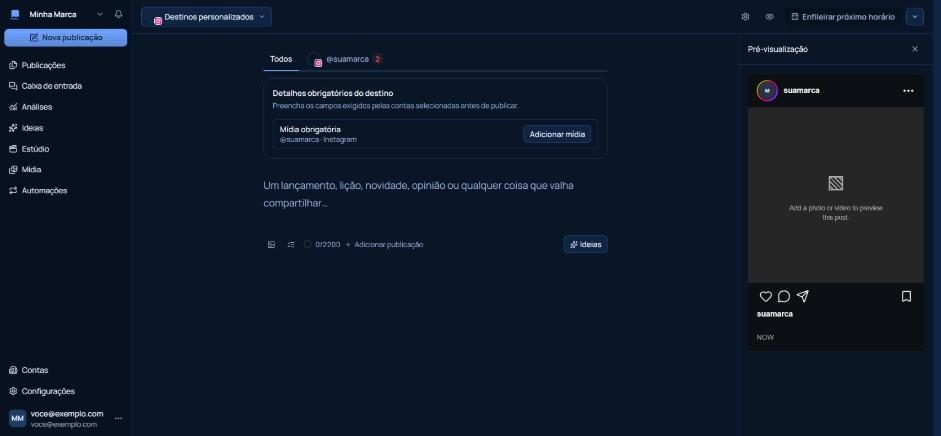
- Clique em Nova publicação (botão azul no topo do menu).
- Escolha onde publicar. No alto, à esquerda, abra Destinos e marque as contas.
- Escreva o texto no campo do meio. O contador embaixo mostra quantos caracteres a rede aceita (no Instagram, 2.200).
- Adicione imagem ou vídeo pelo ícone de imagem embaixo do texto, ou arrastando o arquivo para o editor. Dá para escolher da sua Mídia.
- Confira a pré-visualização à direita: ela mostra como o post vai aparecer na rede.
- Quando estiver pronto, veja o próximo capítulo: Agendar ou publicar agora.
Um texto diferente para cada rede
Logo acima do texto há abas: Todos e uma aba para cada conta escolhida. Em Todos, o que você escreve vale para todas. Clicando na aba de uma conta, você muda o texto ou a mídia só dela, por exemplo uma versão mais curta para o X e uma mais formal para o LinkedIn.
Detalhes obrigatórios do destino
Algumas redes pedem coisas a mais antes de publicar. Quando falta algo, aparece o quadro Detalhes obrigatórios do destino com o que é preciso, como Mídia obrigatória no Instagram. O número vermelho na aba da conta mostra quantas pendências ainda há.
Sequência de posts (thread)
Clique em + Adicionar publicação embaixo do texto para emendar mais uma parte. Nas redes que aceitam sequência (X, Threads, Bluesky e outras), elas saem em fila, uma respondendo à outra.
Agendar ou publicar agora
O botão do canto superior direito do editor decide quando o post sai.
Enfileirar próximo horário
O botão principal. Coloca o post no próximo horário livre da sua agenda semanal.
Agendar
Na setinha ao lado. Você escolhe o dia e a hora exatos.
Publicar agora
Na setinha ao lado. Manda na hora para todas as contas escolhidas.
Rascunho
Não clique em nada: o texto fica salvo para terminar depois.
Passo a passo para agendar num dia e hora
- Com o post pronto, clique na setinha ao lado de Enfileirar próximo horário.
- Escolha Agendar.
- Escolha o dia e a hora e confirme.
- O post vai para Publicações › Agendadas e aparece no calendário.
Acompanhar as publicações
Tudo o que você já criou fica aqui, separado por situação.
Publicações
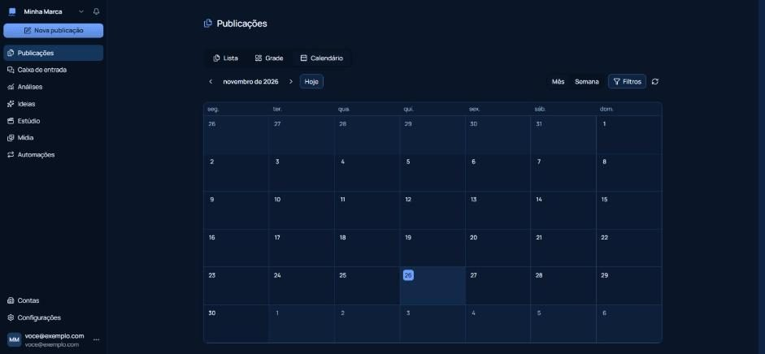
As quatro abas
- Agendadas: vão sair no dia e hora marcados.
- Publicadas: já saíram. Daqui dá para abrir o post na rede.
- Falhadas: a rede recusou. Abra o post para ver o motivo, corrija e tente de novo.
- Rascunhos: ainda não foram agendados.
Três jeitos de ver
- Lista: um embaixo do outro, com busca.
- Grade: as imagens em quadradinhos, como o feed do Instagram.
- Calendário: por Mês ou Semana. Use as setas para trocar de mês e Hoje para voltar. Filtros mostra só algumas contas.
Mudar um post agendado
- Clique no post (na lista ou no calendário).
- Altere o texto, a mídia ou o horário.
- Salve. Para desistir, use a opção de excluir no próprio post.
Horários fixos da semana
Defina uma vez os horários em que você gosta de publicar. Depois, é só clicar em Enfileirar próximo horário e o MaréPost encaixa o post na próxima vaga.
Configurações › Agenda de publicações
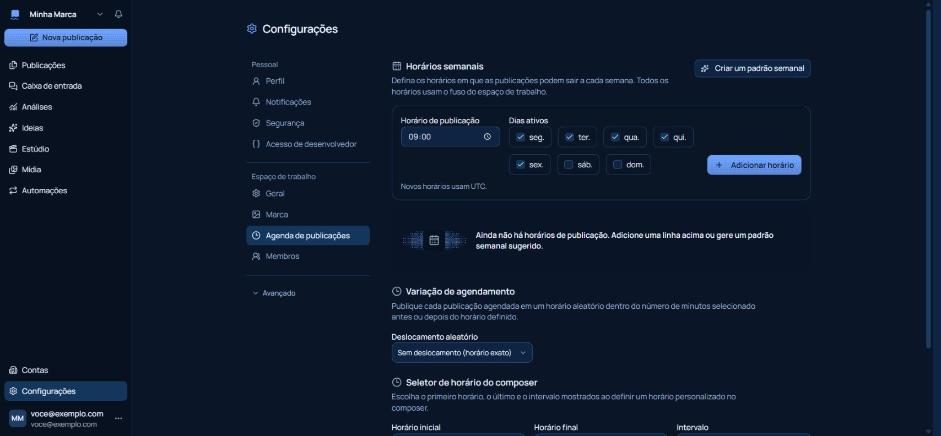
- Em Horário de publicação, escolha a hora (por exemplo, 09:00).
- Em Dias ativos, marque os dias em que esse horário vale.
- Clique em Adicionar horário. Repita para outros horários (por exemplo, 12:00 e 18:00).
- Criar um padrão semanal sugere uma grade pronta de horários.
- Variação de agendamento faz o post sair alguns minutos antes ou depois do horário, para parecer menos automático.
- Seletor de horário do composer define o intervalo de horas que aparece quando você agenda à mão.
Caixa de entrada
Comentários, mensagens e avaliações de todas as redes num lugar só, para responder sem abrir cada aplicativo.
Caixa de entrada
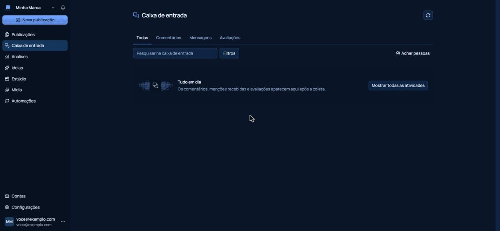
- Escolha a aba: Todas, Comentários, Mensagens ou Avaliações.
- Use a busca ou Filtros para achar uma conversa.
- Clique no item, escreva a resposta e envie.
Análises
Como suas contas e publicações estão indo: quem viu, quem interagiu e quantos seguidores você ganhou.
Análises
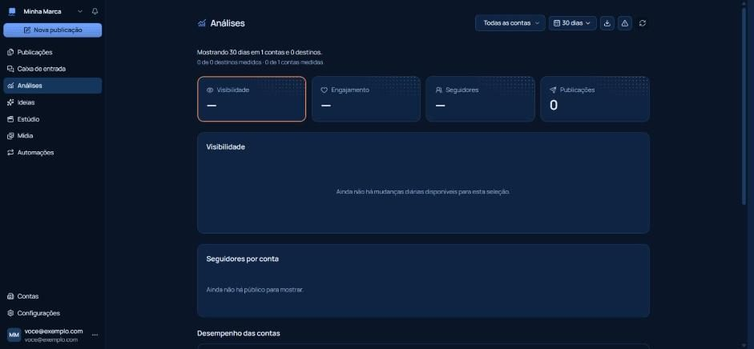
- Todas as contas (no alto): escolha uma conta ou veja todas juntas.
- 30 dias: troque o período.
- Os quatro cartões mostram Visibilidade, Engajamento, Seguidores e Publicações. Clique em um para ver o gráfico dele.
- Mais abaixo: seguidores por conta e o desempenho de cada conta e de cada post.
- O botão de download baixa os números numa planilha.
Ideias com IA
Conte o assunto e a IA escreve opções de posts para você escolher e ajustar.
Ideias
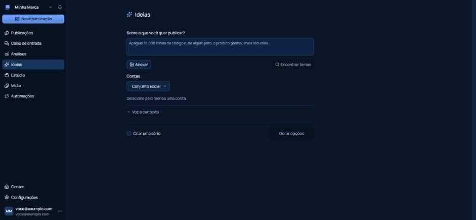
- Em Sobre o que você quer publicar?, escreva o assunto com suas palavras. Dá para Anexar uma imagem ou um arquivo de referência.
- Em Contas, escolha para quais redes são os posts.
- Abra Voz e contexto para dizer o tom (mais sério, mais leve, com emojis ou sem).
- Marque Criar uma série se quiser vários posts sobre o mesmo tema.
- Clique em Gerar opções, escolha a melhor e mande para o editor para revisar e agendar.
- Encontrar temas sugere assuntos quando você não sabe por onde começar.
Estúdio: imagens e vídeos
Ferramentas para criar o conteúdo sem sair do MaréPost. Tudo o que você cria vai para a sua Mídia, pronto para usar num post.
Estúdio
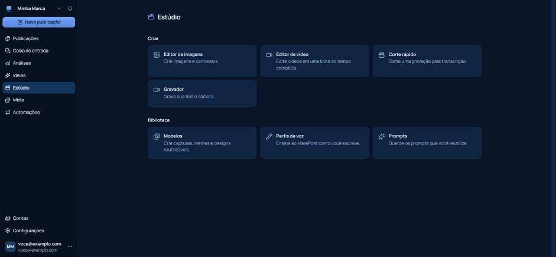
Editor de imagens
Imagens e carrosséis com camadas, textos, modelos e remoção de fundo.
Editor de vídeo
Linha do tempo completa, legendas, cortes e trilha.
Corte rápido
Corta um vídeo pelo texto falado: apague a frase e o trecho some.
Gravador
Grava a tela e a câmera para tutoriais e demonstrações.
Modelos
Designs reaproveitáveis: capas, memes, prints.
Perfis de voz e Prompts
Ensinam à IA o seu jeito de escrever e guardam os pedidos que você repete.
Criar uma imagem para o Instagram
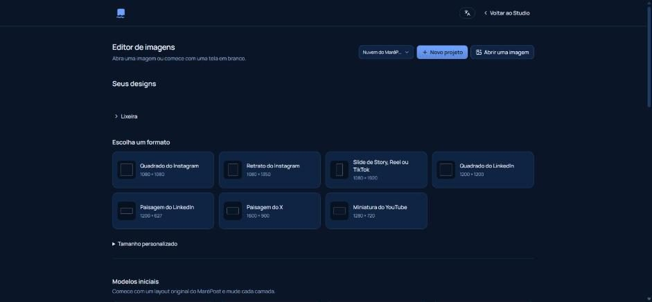
- Em Estúdio › Editor de imagens, escolha o formato em Escolha um formato (por exemplo, Quadrado do Instagram, 1080 × 1080, ou Retrato do Instagram, 1080 × 1350).
- Ou comece por um Modelo inicial, mais abaixo, e troque textos e imagens.
- Para editar uma foto sua, use Abrir uma imagem.
- Monte a arte com textos, formas e imagens. Cada item é uma camada que você move e redimensiona.
- Salve. A arte fica em Seus designs e pode ser exportada para a Mídia e usada num post.
Mídia
A biblioteca de imagens, vídeos, áudios e logos do espaço de trabalho, para reaproveitar em quantos posts quiser.
Mídia
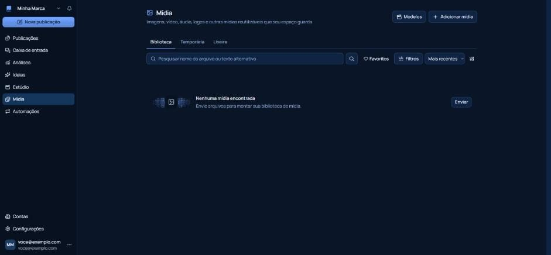
- Clique em Adicionar mídia (ou Enviar) e escolha os arquivos do computador.
- Procure pelo nome ou pelo texto alternativo na busca. Marque os preferidos com o coração e veja só eles em Favoritos.
- No editor de publicação, escolha a mídia daqui para colocar no post.
- Temporária: arquivos enviados direto num post, que ainda não foram guardados na biblioteca.
- Lixeira: o que você apagou. Dá para recuperar antes de ser removido de vez.
- Modelos (no alto): abre os modelos do Estúdio.
Automações
Fluxos que fazem o trabalho repetitivo sozinhos: republicar um post de sucesso, transformar um blog (RSS) em posts, publicar novidades de um projeto no GitHub e outros.
Automações
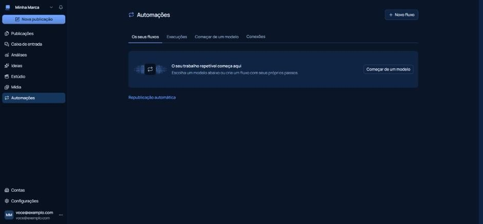
O jeito mais fácil: começar de um modelo
- Clique em Começar de um modelo.
- Escolha um modelo, por exemplo Republicação automática.
- Preencha o que ele pede (contas, horários, regras) e ative.
- Os seus fluxos: os fluxos criados, ligados ou pausados.
- Execuções: o histórico de cada vez que um fluxo rodou, com o resultado.
- Conexões: serviços externos que os fluxos usam.
- Novo fluxo: monta um fluxo do zero, passo a passo.
Configurações
Ajustes da sua pessoa e do espaço de trabalho.
Configurações
Pessoal
- Perfil: nome, foto e e-mail.
- Notificações: escolha quais avisos o MaréPost mostra.
- Segurança: trocar a senha e ligar o login em duas etapas com um app autenticador.
- Acesso de desenvolvedor: chaves para ligar o MaréPost a outras ferramentas (API, CLI, n8n, assistentes de IA). Só mexa se souber o que está fazendo, e nunca compartilhe uma chave.
Espaço de trabalho
- Geral: nome, imagem, cor, fuso horário e o primeiro dia da semana.
- Marca: o kit da marca (cores, fontes e logos), que aparece pronto nos editores do Estúdio.
- Agenda de publicações: os horários da semana (veja Horários fixos da semana).
- Membros: convide colaboradores e escolha o que cada um pode fazer neste espaço de trabalho.
- Avançado: opções técnicas e a Zona de perigo, onde se apaga o espaço de trabalho. Apagar não tem volta.
Aparência
No seu perfil (rodapé do menu), escolha Claro, Escuro ou Sistema. Em Preferências ficam o idioma e os sons da interface.
No celular
O MaréPost funciona no navegador do celular, pelo mesmo endereço público. No celular, o menu vira uma barra embaixo da tela, com Mais para o resto.
- No celular, abra o endereço público do seu MaréPost (por exemplo, https://marepost.seu-tailnet.ts.net) e entre.
- Para ter um ícone na tela inicial: no Chrome do Android, menu ⋮ › Instalar app (ou Adicionar à tela inicial); se o MaréPost oferecer, use também Instalar aplicativo no menu do seu perfil; no Safari do iPhone, Compartilhar › Adicionar à Tela de Início.
Dúvidas frequentes
O post agendado não saiu. E agora?
Veja em Publicações › Falhadas. Se ele estiver lá, abra para ler o motivo. Se ainda estiver em Agendadas, provavelmente o computador estava desligado na hora: ligue e espere alguns minutos.
O Instagram recusou o meu post.
Os motivos mais comuns: post sem imagem ou vídeo, imagem fora do tamanho (use 1080 × 1080 ou 1080 × 1350), vídeo longo demais ou conta que deixou de ser profissional. Se o erro fala de permissão, reconecte a conta em Contas.
O horário do post está errado (sai 3 horas antes).
O fuso horário está em UTC. Troque em Configurações › Geral › Fuso horário e salve. Confira os posts que já estavam agendados.
A rede pediu para conectar de novo.
As redes expiram a autorização de tempos em tempos ou quando você troca a senha delas. Em Contas, clique nos três pontinhos da conta e reconecte.
Posso usar com mais de uma marca?
Sim. Clique no nome do espaço de trabalho, no topo do menu, e crie outro. Cada espaço tem as próprias contas, posts e mídias.
Outra pessoa pode me ajudar a postar?
Pode. Convide pelo e-mail em Configurações › Membros. Para ela entrar de fora, o MaréPost precisa estar acessível pelo endereço público.
Os botões de IA estão apagados.
A IA não foi configurada nesta instalação. O README do projeto explica como ligar uma IA local e grátis com o Ollama.
Meus dados vão para algum lugar?
Não. Tudo fica no computador onde o MaréPost está instalado. A telemetria vem desligada. Só saem os posts que você publica nas redes que conectou.
Como imprimir ou salvar este manual em PDF?
Clique em Imprimir / PDF, no topo desta página, e escolha Salvar como PDF. O manual sai com capa, sumário e um capítulo por página.